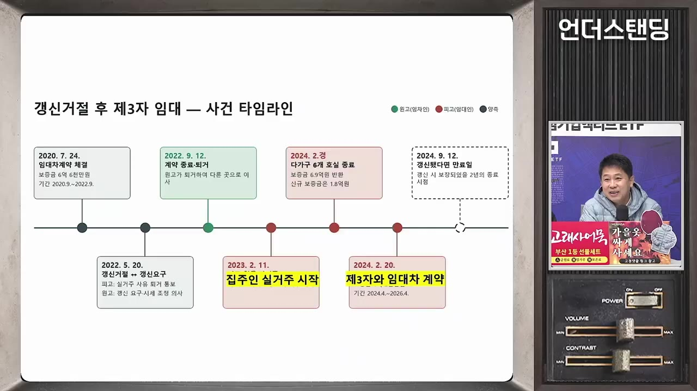
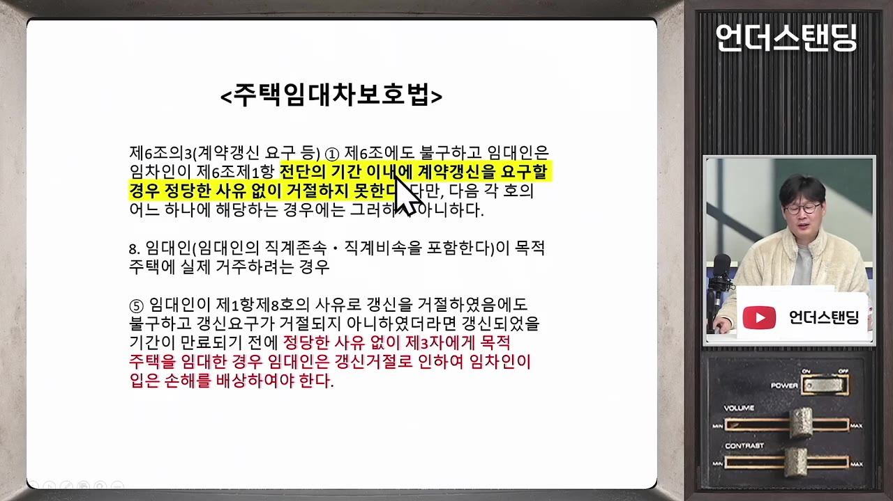
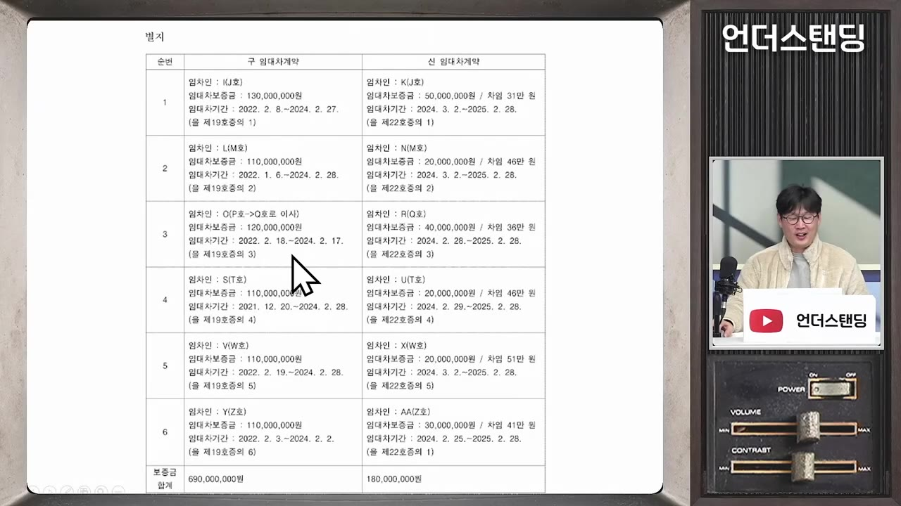

"실거주 1년반 했지만 패소했습니다" 세입자 내보냈다가 3,000만 원 물어준 집주인(언더스탠딩 장순원 기자)
🎙️ 자막 대신 영상 음성을 받아써서 정리 (ko (음성 받아쓰기·GPU))
▶ 원본 영상 보기한눈에 보기
- 대법원은 세입자의 계약갱신요구를 '실거주'로 거절한 집주인이 갱신됐을 기간이 끝나기 전에 새 세입자를 들이면 손해배상을 해야 한다는 2심 판단을 받아들였다. 이 사건 배상액은 약 3,000만 원이다.
- 집주인은 다가구주택 세입자 6명이 한꺼번에 보증금을 돌려 달라고 해서 어쩔 수 없었다고 주장했다. 1심은 이를 받아들였지만 2심과 대법원은 받아들이지 않았다.
- 법원은 '정당한 사유'로 인정받으려면 예측할 수 없었던 일이어야 하고, 다른 방법이 없었어야 한다고 봤다. 두 조건을 모두 갖춰야 한다.
- 임대가 아니라 매도하거나 집을 비워 두는 경우도 배상 대상인지는 아직 정해지지 않았다. 하급심 판결이 엇갈리고, 출연자들의 해석도 갈렸다.
- 영상의 결론은 이렇다. 실거주를 이유로 세입자를 내보냈다면 사실상 '2+2년'을 채울 때까지 직접 살아야 하고, 그러지 못하면 집주인이 지는 리스크가 매우 크다.
이런 분께 도움이 됩니다
- 실거주를 이유로 갱신을 거절했거나 거절하려는 집주인: 중간에 다시 세를 놓거나 팔 때 생길 수 있는 리스크를 알 수 있다.
- 실거주를 이유로 갱신을 거절당한 세입자: 어떤 경우에 손해배상을 청구할 수 있고, 배상액이 어떻게 계산되는지 알 수 있다.
핵심 내용
판결의 결론: 실거주로 내보냈으면 기간을 채워야 한다
- 집주인이 실거주를 이유로 갱신을 거절한 뒤 '갱신됐을 기간' 안에 제3자에게 다시 임대하면, 정당한 사유가 없는 한 내보낸 세입자에게 배상해야 한다. (0:59)
- 1심은 집주인 사정이 불가피하다며 집주인 손을 들어줬다. 2심이 이를 뒤집었고 대법원이 2심 판단을 받아들였다. (5:20, 24:47)
- 이번 판결은 '정당한 사유'가 무엇인지에 대한 판단 기준을 내놓았다는 데 의미가 있다.
💡 실거주로 세입자를 내보낸 집주인은 이 기간을 채우지 않으면 예외를 인정받기가 매우 어렵다.
사건 경과
🔁 세입자 퇴거부터 소송까지
- 최초 계약
- 갱신 거절
- 집주인 실거주
- 다가구 보증금 반환
- 새 세입자 입주
- 소송
- 1최초 계약
세입자가 2020년 7월에 계약하고 9월에 입주했다. (1:54)
- 2갱신 거절
2년이 다가오자 세입자가 갱신을 요구했으나 집주인이 실거주를 이유로 거절했다. 세입자는 2022년 9월에 퇴거했다.
- 3집주인 실거주
집주인이 직접 들어가 살았다. 제목 기준으로 약 1년 반이다. 시작 시점은 자막상 불분명하다(3:46에 '23년 2월'이라는 말이 나옴).
- 4다가구 보증금 반환
2024년 2월 무렵 집주인 소유 다가구주택의 세입자 6명이 한꺼번에 보증금 반환을 요구했다.
- 5새 세입자 입주
갱신됐다면 끝났을 2024년 9월 12일보다 몇 달 앞서 새 세입자와 계약하고 입주시켰다. 집주인은 다른 곳으로 이사했다.
- 6소송
이 사실을 안 전 세입자가 손해배상을 청구했다. 1심은 집주인이 이겼고, 2심과 대법원은 세입자 손을 들어줬다.

'사건 타임라인' 슬라이드: 2020.7.24 계약부터 2024.9.12 만료일까지 · ▶ 1:58
- 누가 그 집에 사는지는 임대차 이해관계인이라면 주민센터(동사무소)에서 확인할 수 있을 것이라고 영상은 설명했다.
집주인의 주장: "이보다 불가피한 사유가 어디 있나"
- 다가구주택 세입자 6명의 보증금은 6억여 원이었는데, 새로 받은 보증금은 1억여 원뿐이었다. 나머지 약 5억 원어치는 새 세입자들이 월세로 돌리겠다고 했다. (3:46, 4:37)
- 집주인은 메울 방법이 없었다고 설명했다.
- 소득이 없어 은행 대출을 받을 수 없었다.
- 아파트를 팔면 양도세가 약 3억 원이라 남는 게 없었다.
- 그래서 살던 아파트를 전세로 놓아 받은 돈으로 보증금을 돌려줬다.
법 조항: '정당한 사유'는 법에 정의돼 있지 않다
- 주택임대차보호법은 최초 2년에 더해 갱신 2년(2+2) 동안, 갱신 요구를 정당한 사유 없이 거절하지 못하게 한다. 집주인 본인의 실거주는 거절 사유로 인정된다. (5:36)
- 실거주로 거절한 뒤 '갱신되었을 기간'이 끝나기 전에 정당한 사유 없이 제3자에게 임대하면 손해를 배상해야 한다. 영상에서는 이 내용을 5항 두 번째 문장으로 짚었다. (14:08)
- 법에는 '정당한 사유'라는 말만 있고 무엇이 정당한 사유인지는 없다. 판단은 법원의 몫이다.
- 법 문구대로라면 금지되는 것은 '제3자에게 임대'하는 것이다. 그래서 실거주를 못 하게 되면 남은 기간은 비워 둬야 한다는 해석이 나왔다. (15:01)

'정당한 사유'의 두 요건
| 요건 | 법원이 본 내용 | 이 사건 판단 |
|---|---|---|
| 예측 가능성 | 갱신을 거절할 때 그 채무가 생길 것을 알 수 있었는가 | 다가구 세입자 계약이 2022년 1~2월에 몰려 있어 2024년 1~2월에 만기가 온다는 것을 알 수 있었다 → 예측 가능한 채무 |
| 불가피성 | 그 집을 다시 임대하는 것 말고 다른 방법이 없었는가 | 다가구주택이나 아파트를 파는 등 다른 수단이 있었다 → 다시 전세를 놓은 것은 집주인의 선택 |
- 2심은 두 요건을 모두 갖춰야 정당한 사유라고 봤다. (5:36)
- 전세보증금은 원래 언젠가 돌려줘야 하는 채무다. 그래서 만기가 올 것을 알고도 세입자를 내보내고 들어갔다면 예측할 수 있었던 일로 본 것이다. (6:30, 7:27)
- 출연자들은 "경매에 들어가는 한이 있더라도 2년을 채운 뒤 세를 놓거나 다가구를 팔았어야 한다는 수준"이라며 매우 엄격한 해석이라고 평가했다.

법원이 의심한 정황: 보증금을 올리려고 내보낸 것 아닌가
- 판결문에 따르면 집주인은 부동산 중개인을 통해 6억 원이던 전세금을 10억 원으로 올려 주면 계속 살아도 된다는 취지의 말을 전했다. (9:25)
- 보증금 1억 원에 월세 300만 원으로 바꾸자는 제안도 했다고 한다.
- 법원은 보증금을 더 받으려고 세입자를 내보냈을 가능성을 배제하기 어렵다고 보고, 이 점도 함께 고려했다.
- 갱신하면 인상률이 5% 상한에 묶이지만, 새로 계약하면 시세대로 받을 수 있다.
💡 법의 취지는 '실거주한다고 하고 내보낸 뒤 세입자를 바꿔치기하는 것'을 막는 데 있다.
손해배상액 계산법
| 방식 | 내용 |
|---|---|
| ① | 갱신 거절 당시 환산월차임(전세를 월세로 환산한 금액)의 3개월분 |
| ② | 새 세입자의 환산월차임과 기존 세입자 환산월차임의 차액 × 24개월 |
| ③ | 새 세입자에게 임대해서 얻은 이익(초과이익) |
- 영상 설명에 따르면 셋 중 가장 큰 금액이 배상 기준이 된다. (12:13)
- 이 사건에서 법원은 초과이익을 약 4,000만 원으로 봤다. 세입자가 청구한 약 3,000만 원은 그대로 인정됐다.
남은 쟁점: 매도·공실도 안 되나
- 이번 판결은 '재임대'에 관한 것이다. 매도나 공실(집을 비워 둠), 멸실(철거)에 대해서는 아직 대법원 판례가 없다고 영상은 전했다. (15:01, 19:17)
- 최강석 변호사(과거 출연자)는 매도도 문제가 될 수 있다고 봤다.
- 주택임대차보호법에 명시된 것은 아니다.
- 하지만 정당한 사유 없이 갱신을 거절한 것은 민법상 불법행위로 보아 손해배상 책임을 물을 수 있다는 논리다. (16:45)
- 하급심 판결은 엇갈린다. 매도도 배상해야 한다는 판결도 있고 아닌 판결도 있다.
- 출연자들의 시각도 둘로 갈렸다.
| 진행자 측 시각 | 장순원 기자 측 시각 |
|---|---|
| 법은 '임대'만 금지했다. 비우거나 파는 것은 집주인의 재산권이다 | 실거주 예외는 '거주'만 허용한 것이다. 파는 것은 예외를 우회하는 수단이 될 수 있다 |
| 매도까지 막으려면 법에 명시하거나 차라리 4년을 보장해야 한다 | 이를 허용하면 일주일만 살고 비운 채 팔 수 있어 세입자 보호가 무너진다 |
- 진행자는 한때 기자의 해석이 맞다고 했다. 하지만 마지막에는 "그럴 거면 '정당한 사유'가 아니라 '무조건'이라고 법을 바꿔야 한다"고 비판했다.
그래서 무엇이 '불가피'로 인정될까
기억할 숫자·인용
- 2+2년: 계약갱신요구권으로 세입자가 살 수 있는 기간이다.
- 2024년 9월 12일: 이 사건에서 갱신됐다면 끝났을 날이다.
- 6억여 원 → 1억여 원: 다가구주택 기존 보증금과 새로 받은 보증금이다.
- 양도세 약 3억 원: 아파트를 팔 경우라고 집주인이 주장한 금액이다.
- 10억 원 / 보증금 1억·월세 300만 원: 집주인이 중개인을 통해 제시했다는 조건이다.
- 약 4,000만 원 / 약 3,000만 원: 법원이 본 초과이익과 인정된 배상액이다.
- "세입자 내보내고 들어왔으면 그 어떤 경우에도… 예외 없이 2년을 살아야 한다는 뜻이네요."
- "그럴 거면 정당한 사유가 아니라 무조건이라고 바꿔야지."
생각해볼 점
- 이 노트는 영상 속 출연자들의 설명과 의견을 정리한 것이다. 판결문 원문(사건번호 등)은 영상에 나오지 않았다. 실제 분쟁이라면 판결문과 변호사 상담으로 확인해야 한다.
- 배상액 산정 방식의 '가장 큰 금액' 기준은 영상 설명란에 나온 내용이다. 방송 중에는 세 방식만 소개됐다.
- (내 의견) 이 판결은 '예측 가능성'을 넓게 봤다. 그래서 갱신 거절 당시 이미 다른 큰 보증금 만기가 있었던 집주인일수록 불리할 수 있다. 다만 매도나 공실은 아직 판례가 갈리는 영역이라 단정하기 어렵다.
바로 해볼 일
- (집주인) 실거주를 이유로 갱신을 거절했다면, 내보낸 세입자의 '2+2년'이 끝나는 날짜를 계산해 적어 두기
- (집주인) 그 기간 안에 다시 세를 놓거나 팔 계획이 있다면, 전 세입자와 합의할 수 있는지 먼저 검토하고 변호사와 상담하기
- (세입자) 실거주를 이유로 퇴거했다면, 이해관계인으로서 주민센터에서 그 집의 전입·임대 현황을 열람할 수 있는지 문의해 보기